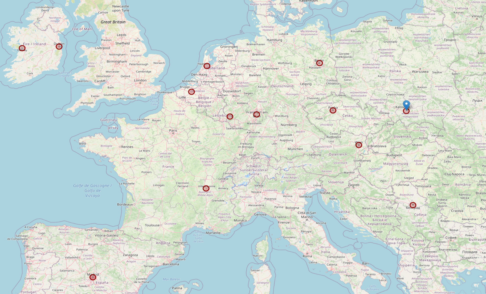
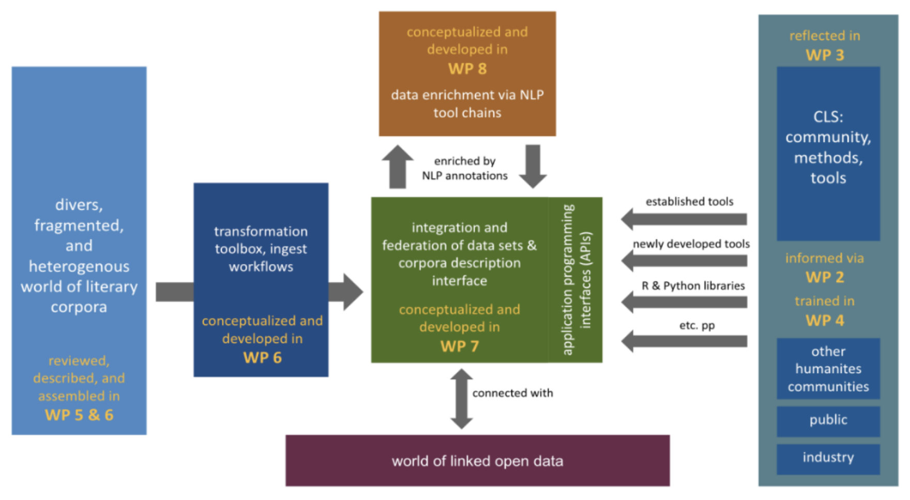

### Computational Literary Studies<br/>Infrastructure (CLS INFRA).<br/>Projektpräsentation <hr/> <br/><p>Christof Schöch, Evgeniia Fileva, Julia Dudar (TCDH, Trier)</p> <br/> <p><strong><emph>Januar 2022</strong></p> <p><strong>Website: <a href="https://clsinfra.io/">clsinfra.io/</a></strong></p> <p><strong>Slides: <a href="https://dh-trier.github.io/clsi/#/">dh-trier.github.io/clsi/</a></strong></p> <hr/> <img height="70" data-src="img/basics/tcdh-slim.png"> -- ## CLS INFRA Übersicht --- ### Schlüsseldaten * Background: COST Action 'Distant Reading' und DARIAH-EU <!-- .element: class="fragment" data-fragment-index="1" --> * Schwerpunkt: Infrastruktur für CLS-Forschung <!-- .element: class="fragment" data-fragment-index="2" --> * Projektleiter: Maciej Eder (IJP-PAN, Krákow) <!-- .element: class="fragment" data-fragment-index="3" --> * Förderung: 'Starting Community' programme in Horizon 2020 <!-- .element: class="fragment" data-fragment-index="4" --> * Projektlaufzeit: von März 2021 bis Februar 2025 <!-- .element: class="fragment" data-fragment-index="5" --> * Partner: 13 Partner aus ganz Europa <!-- .element: class="fragment" data-fragment-index="6" --> --- ### Partner <a href="img/network.html"></a> <small> * **Institute of Polish Language, Krákow, PL (Maciej Eder - project lead)** * Charles University, CZ (Silvie Cinkova) * DARIAH-EU, Dublin (Jennifer Edmond; Frank Fischer) * ENS, Lyon, FR (Serge Heiden) * GhentCDH, Ghent University, BE (Julie Birkholz, Sally Chambers) * HU Berlin, DE (Carolin Odebrecht) * KNAW, Amsterdam, NL (Karina van Dalen-Oskam) * National University of Ireland, Galway, IRL (Justin Tonra) * ÖAW, Vienna, AT (Matej Durco) * Potsdam University, Potsdam, DE (Peer Trilcke) * Serbian Center for Digital Humanities, Belgrade, SRB (Toma Tasovac) * TCDH, Trier University, Trier, DE (Christof Schöch) * UNED, Madrid, ES (Salvador Ros) </small> --- ### Projektziele (global) * Unterstützung beim Aufbau einer Infrastruktur für CLS: Datensätze, Tools, Wissen, Standards, Politik, Community <!-- .element: class="fragment" data-fragment-index="1" --> * Verbindung institutioneller, regionaler, nationaler und europäischer Infrastrukturinitiativen für CLS <!-- .element: class="fragment" data-fragment-index="2" --> * Stärkung der Kommunikation zwischen erfahrenen Forschern, angehenden Forschern, Sammlungsinhabern und Forschungsinfrastrukturen <!-- .element: class="fragment" data-fragment-index="3" --> * Entwicklung von Lösungen für die Nachhaltigkeit der europäischen CLS-Infrastruktur <!-- .element: class="fragment" data-fragment-index="4" --> * Entwicklung eines Konzepts für die Bereitstellung von Datensätzen für/mit Analysen ("programmable corpora" / "programmierbare Korpora") <!-- .element: class="fragment" data-fragment-index="5" --> * Fortführung der Ambitionen der COST Action, DARIAH und CLARIN in Bezug auf offene, vielfältige und mehrsprachige CLS <!-- .element: class="fragment" data-fragment-index="6" --> --- ### Konkrete Ziele * Anforderungen, best practices und neue Trends verstehen (Forschungsanalyse) <!-- .element: class="fragment" data-fragment-index="1" --> * Best Practices und methodische Schlüsselkompetenzen verbreiten (Schulungen, Materialien) <!-- .element: class="fragment" data-fragment-index="2" --> * Schlüsseldatensätzen identifizieren und beschreiben (Datenkuratierung) <!-- .element: class="fragment" data-fragment-index="3" --> * Datensätze mit Tools verbinden (Datentransformationen) <!-- .element: class="fragment" data-fragment-index="4" --> * Die wichtigsten NLP-Werkzeuge auf breiter Basis bereitstellen (Werkzeugintegration) <!-- .element: class="fragment" data-fragment-index="5" --> * Prototyp für die Implementierung programmierbarer Korpora entwickeln <!-- .element: class="fragment" data-fragment-index="6" --> --- ### Projektübersicht  --- ### Arbeitspakete / Work Packages <small> | W P| Lead | Topics | |:--:|:---------:|:-------| |WP1 | Krákow | Management, Coordination and Innovation Planning | |WP2 | Galway | Dissemination, Communication and Exploitation | |**WP3** | **Trier** | **Methodological considerations of CLS** | |WP4 | Amsterdam | Training and Skills for CLS | |WP5 | Berlin | Issues of data curation and selection | |WP6 | Vienna | Consolidating and preparing data for CLS | |WP7 | Potsdam | Building the Ecosystem of and for Programmable Corpora | |WP8 | Ghent | Corpus Enrichment and NLP Toolchains | |WP9 | Dublin | Transnational Access to key collections and methods | |WP10| Krákow | Ethics requirements | </small> -- ## WP 3: Methodological Considerations of CLS<br/>("Methods") --- ### WP 3: Team * Lead: TCDH, Trier <!-- .element: class="fragment" data-fragment-index="1" --> * Christof Schöch * Evgenia Fileva * Julia Dudar * Partner <!-- .element: class="fragment" data-fragment-index="2" --> * Maciej Eder (IJP-PAN, Krákow) * Karina van Dalen-Oskam (KNAW, Amsterdam) * Peer Trilcke (Potsdam University) * Salvador Ros (UNED, Madrid) * Jennifer Edmond (DARIAH, Dublin) * Matej Durco (ÖAW, Vienna) --- <!-- ### WP 3: Übergeordnete Ziele * Konsolidierung der CLS-Gemeinschaft durch die Festlegung von Nutzeranforderungen und die Dokumentation sowie Verbreitung der methodischer Best practices <!-- .element: class="fragment" data-fragment-index="1" --> <!-- * Sensibilisierung der breiteren Gemeinschaft der CLS-Forscher und darüber hinaus für die wichtigsten Probleme, die die fortschreitende Entwicklung und Übernahme gemeinsamer Forschungsinfrastrukturen behindern könnten, sowie Vorstellung erfolgreicher Anwendungsbereiche <!-- .element: class="fragment" data-fragment-index="2" --> <!--* Unterstützung der Adaption relevanter neuer Methoden aus anderen Bereichen in die CLS, um Exzellenz und Innovation in der CLS-Forschung zu steigern <!-- .element: class="fragment" data-fragment-index="3" --> <!--* Erforschung des Nutzens literarischer Daten für die Forschung über die CLS-Forschungsgemeinschaft hinaus <!-- .element: class="fragment" data-fragment-index="4" --> --- ### WP 3: Ziele * Erfassen und Dokumentieren der aktuellen Bedürfnisse und Praktiken im CLS <!-- .element: class="fragment" data-fragment-index="1" --> * Ableitung von Anforderungen an die Infrastruktur aus Veröffentlichungen * Sammeln und Dokumentieren aktueller Best practices in der CLS-Forschung <!-- .element: class="fragment" data-fragment-index="2" --> * Einbindung von best practices in das Schulungsprogramm (WP4) * Präsentation (showcase) der best practices und neuer Trends <!-- .element: class="fragment" data-fragment-index="3" --> * Spitzenforschung erproben / neue Methoden anpassen * Diese als Showcases dokumentieren * Hindernisse für weitere Schritte skizzieren * Nutzung literarischer Daten über CLS hinaus erkunden <!-- .element: class="fragment" data-fragment-index="4" --> --- ### WP 3: Leistungen * D3.1: Bericht über die methodische Baseline für CLS/LS (Monat 12) <!-- .element: class="fragment" data-fragment-index="1" --> * D3.2: Fünf kurze Survey Papers zu wichtigen methodischen Fragen (Monat 24) <!-- .element: class="fragment" data-fragment-index="2" --> * D3.3: Vier Showcases mit Erklärungen (zwei im Monat 24, zwei weitere im Monat 36) <!-- .element: class="fragment" data-fragment-index="3" --> * D3.4: Eine Reihe von drei Position Papers (zur Diskussion ab 15. Monat) und zwei Pilot Studies (Final Deliverable im 40. Monat) zu neuen Trends in den CLS-Methoden <!-- .element: class="fragment" data-fragment-index="4" --> * D3.5: Bericht über Nutzerbedürfnisse, die über die akademische Forschung hinausgehen, einschließlich Nutzerberichte/Szenarien (Monat 40) <!-- .element: class="fragment" data-fragment-index="5" --> --- ### WP 3: Tasks und Partner * T3.1 (baseline): Trier und Amsterdam (WP 4) <!-- .element: class="fragment" data-fragment-index="1" --> * T3.2 (key methods): Trier, Krákow und Amsterdam (WP 4) <!-- .element: class="fragment" data-fragment-index="2" --> * (a) authorship * (b) literary genres * (c) literary history * T3.3 (Showcases) <!-- .element: class="fragment" data-fragment-index="3" --> * (a) ELTeC for stylometry: Trier und Krákow * (b) character networks in drama (Potsdam) * (c) poetry scansion (Madrid); * (d) spatio-temporal mapping with LOD (Vienna) * T3.4 (pilot studes): Trier und Krákow <!-- .element: class="fragment" data-fragment-index="4" --> * (a) Deep Learning * (b) Linked Open Data * (c) tbc. * T3.5: Users beyond CLS (Dublin) <!-- .element: class="fragment" data-fragment-index="5" --> -- ## Fazit --- ### Für uns in Trier * Wichtiger Baustein in der Verankerung der CLS * Beitrag zum Forschungsbereich III * Vernetzung mit Text+, SPP, ELTeC, MiMoText bedenken --- ### Weitere Informationen * Updates auf Twitter: @CLSinfra * Projektwebseite: https://clsinfra.io --- <img height="500" data-src="img/basics/danke.png"> --- <br/> <br/> <br/> <br/> <br/> <br/> <br/> <br/> <br/> <br/> <br/> <hr/> <p><a href="https://creativecommons.org/licenses/by/4.0/">CC-BY 4.0</a><br/></p> <hr/> <br/> <br/> </script> </section>